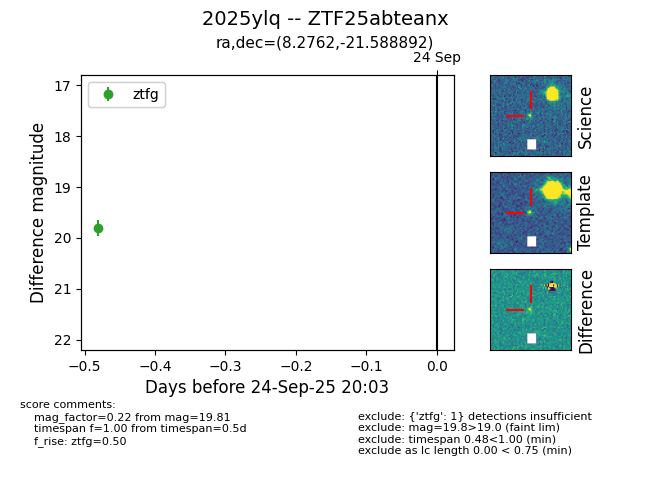

FINK: ZTF25abteanx
Lasair: ZTF25abteanx
ALeRCE: ZTF25abteanx
TNS: 2025ylq
YSE: 2025ylq
ZTF25abteanx (ztf,fink)
2025ylq (tns,yse)
equatorial (ra, dec) = (8.2762,-21.58889)
galactic (l, b) = (84.9528,-83.06503)

last ztfg=19.81
1 ztfg detections